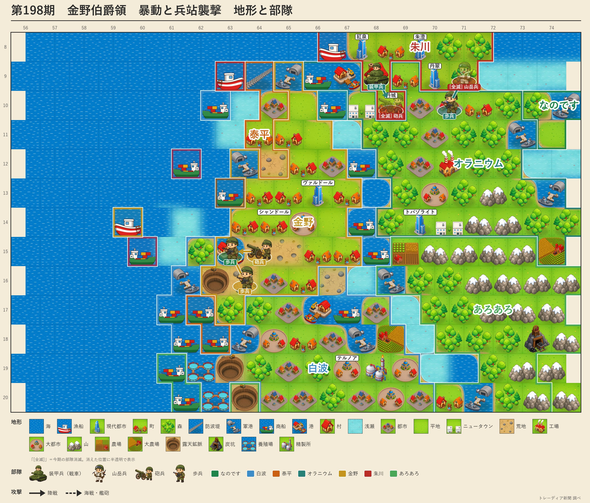

シャンドール周辺。暴徒が兵站と町を同時に襲った区画。
【社会部】第198期、金野伯爵領の食料備蓄がゼロとなった。夜明け前、首都シャンドールの配給所には空の籠を抱えた住民が集まり、役人に食料を求めた。倉に一袋も残っていないと知らされると列は兵站基地へ向かい、同じ期に十四地点で暴動が発生した。町・都市・大都市・現代都市に及び、首都シャンドール（64,14）と現代都市ヴァルドール（66,13）も含まれる。発生地点は（65,16）（63,14）（64,16）（64,13）（65,13）（66,12）（65,11）（65,14）（65,12）（66,13）（67,13）（66,15）（67,15）（64,14）。
最初に破られたのは、シャンドール北の兵站基地（64,15）だった。群衆は荷車を門へぶつけて柵を倒し、倉から麦袋と乾パンを運び出した。守備の予備兵は投降。南の基地（63,16）も続いて壊れ、農場（65,15）では残っていた麦束が持ち去られた。自国内では兵站二か所と農場一か所が壊滅し、次期の備蓄だけでなく収穫にも打撃が及ぶ。
怒りは国境を越えた。泰平天国の兵站（64,12）と白波王国の兵站（66,16）にも群衆が押し寄せ、食料庫を開けろと叫んで門を壊した。伯領内の二基地・一農場と合わせ、壊滅した施設は兵站四か所、農場一か所。粉屋の軒先には「麦を返せ」「無能な貴族を殺せ」と書いた布が掲げられ、空袋を持つ住民が広場を埋めた。金野軍はなのです前線で砲兵戦を続け、今期はなのです側砲兵が二千九百人の損害を記録した。国内の兵站を守る兵力も足りなかった。
午後、群衆は金野伯爵をシャンドールの広場へ引き出し、薪を積んで火あぶりにした。処刑を見届けた人々は屋敷と倉へ流れ込み、残る食料や家財を奪った。夜になっても十四地点の暴動は収まらず、隣国の兵站にも被害が及んだ。伯爵の死で指揮系統は途絶え、食料庫・農場・兵站を失った伯領では、誰が配給と治安を担うのかも定まっていない。
王国軍の終焉
【評論】王国軍は灰岩王国、紅峰公国、蒼森辺境伯領、金野伯爵領、銀嶺侯国の五国連携だった。盟主の灰岩王国は第183期、紅峰公国は第195期に滅亡した。盟主の灰岩王国と紅峰公国が相次いで滅び、王国軍を束ねる中核は失われていた。
銀嶺侯国はあろあろ国とチェス＝シロバキア共和国の二正面に追われ、今期は首都の歩兵部隊が全滅した。人口七千九百人、領土六区画まで縮む。金野伯爵領では食料備蓄がゼロとなり、十四地点で暴動が発生。兵站四か所と農場一か所が壊滅し、伯爵は広場で火あぶりにされた。兵力五万七千五百人、領土二十五区画を保ちながら、金野は住民への配給も施設の防衛も果たせなかった。
蒼森辺境伯領は陣容を保つ一方、第198期に黒潮自治国から宣戦を受け、開戦は第203期に予定される。盟主を失った五国は、滅亡・二正面戦・内乱・新たな宣戦という別々の局面に分かれた。王国軍は各国を共同戦線へ結び付ける力を失い、軍事連携としての役目を終えつつある。灰岩と紅峰の滅亡に続く銀嶺の敗退、金野の暴動が、その終焉を決定づけた。